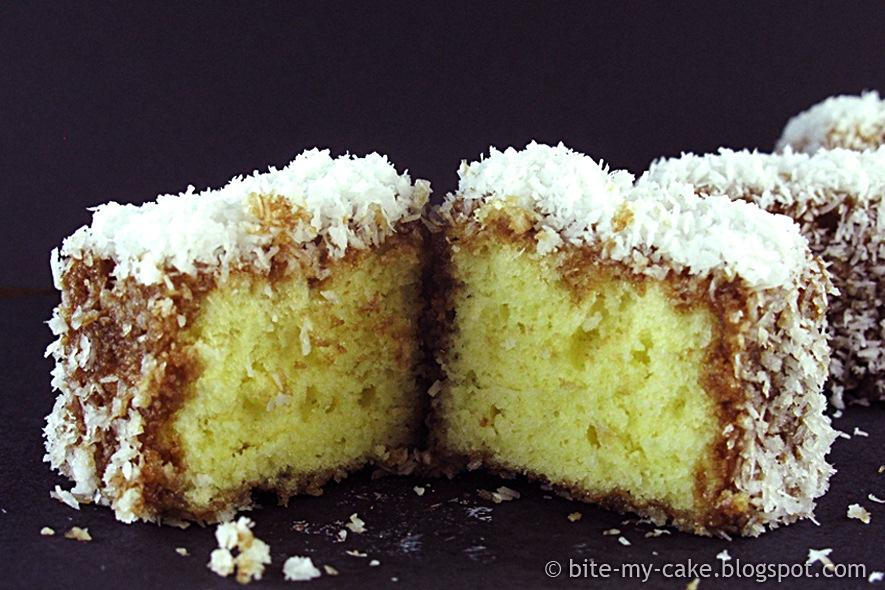

Cupavci

History of Cupavci
The name Cupavci was named after Lord Lamington, who served as Governor of Queensland from 1896 to 1901, although it might have been named for his wife, Lady Lamington. The food Cupavci is a dessert. It is from the Balkans. So you could find it in the countrys of Montenegro, Croatia, Serbia etc.
Ingredients
- 3 eggs
- 3 cups of sugar
- 2 1/2 cups of milk
- 2 cups of flour
- 1 1/2 cups of milk
- 2 1/2 sick of melted butter
- 1 Table spoon baking powder
- 2 bars of Dark Chocolate
- 1 cup of dry coconut
Steps
- In a mixer beat 3 eggs and 1 1/2 cups of sugar
- Add 1/2 stick melted butter, 1 cup milk, 2 cups of flour and one table spoon of baking powder, mix for 5 minutes
- Grease a 13x9 pan with butter, Pour batter into pan and bake at 350 degrees for 45 minutes
- In a saucepan add 1 1/2 cups of milk, 1 1/2 cups of sugar, heat on low temputure and add 2 sticks of butter and 2 bars of chocolate and continue to stir.
- Remove pan from oven and let cool
- Cut into 2x2 squares
- Remove chocolate mixture from stove and let cool
- Take cake pieces dip into the chocolate mixture and finally dip into dry coconut
Video Link for How to Make Cupavci